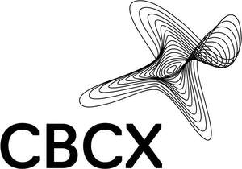
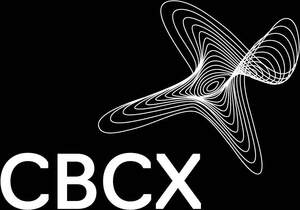

Trade Mark Journal No.2025/044 31 October 2025
UK00004283410 24 October 2025 (9,35,36,38,41,42)
Mark 1

Mark 2

Description: The mark consists of an abstract "X" shape formed by a series of interlaced contour lines positioned above the word “CBCX”. No colour is claimed.
- Class 9
- Cryptocurrency hardware wallets; Downloadable computer software for managing cryptocurrency transactions using blockchain technology; Downloadable software for generating cryptographic keys for receiving and spending cryptocurrency; E-commerce and e-payment software; Cryptography software; Downloadable computer software for blockchain technology; Downloadable cryptographic keys for receiving and spending crypto assets; Downloadable computer software applications for minting non-fungible tokens [NFTs]; Security token hardware for user authentication.
- Class 35
- Provision of an online marketplace for buyers and sellers of downloadable digital image files authenticated by non-fungible tokens [NFTs]; Provision of online marketplaces for buyers and sellers of goods and services which are authenticated by non-fungible tokens; Advertising services relating to financial services; Advertising services relating to financial investment.
- Class 36
- Financial exchange of cryptocurrency; Financial trading of cryptocurrency; Cryptocurrency exchange services; Financial transactions via blockchain; Financial and monetary transaction services; Financial services in the nature of an investment security; Electronic financial trading services; Financial services; Financial consulting services; Financial investment services; Financial consultancy services; Financial management services; Financial brokerage services; Financial information services; Financial advisory services; Financial exchange services; Financial intermediary services; Financial and investment consultancy services; Financial investment management services; Financial clearing services; Brokerage services in financial markets; Financial investment advisory services; Financial consultancy services relating to investments; Financial investment research services; Brokerage services relating to financial instruments; Brokerage services on the financial markets; Financial data base services; Brokerage services in the field of financial instruments; Commodity trading [financial services]; Brokerage services for capital investments; Financial brokerage; Brokerage (Financial -); Brokerage of financial derivatives; Financial advisory services for companies; Financial investment; Financial investments; Financial investment in the field of securities; Financial transactions; Issuing of tokens of value; Issuing tokens of value; Issuance of tokens of value; Provision of prepaid cards and tokens; Issuing of tokens of value in relation to customer loyalty schemes; Issuing tokens of value as part of a customer membership scheme; Financial consultancy relating to the execution of cashless payment transactions; Online financial transactions; Conducting of financial transactions on-line; Financial banking; Financial transactions relating to currency swaps; Financial services in relation to digital currencies; Computerised financial services relating to foreign currency dealings; Financial underwriting and securities issuance (investment banking); Financial and monetary services; Brokering of financial services; Financial consultation services; Financial investment brokerage; Capital investment brokerage; Organisation of trading markets for financial services; Investment brokerage; Brokerage of currency; Financial advisory and consultancy services; Financial consultancy and advisory services.
- Class 38
- Telecommunications services between financial institutions; Electronic communication services for financial institutions.
- Class 41
- Education services; Training and education services; Education and training services; Adult education services; Computer education training services; Provision of training and education; Provision of education and training; Career counseling [education]; Career counselling relating to education and training; Education courses relating to automation; Education services relating to business training; Education in the field of computing; Adult education services relating to commerce; Organization of education competitions; Online education services; Technological education services.
- Class 42
- Cryptocurrency mining; Mining of cryptocurrency; Electronic storage of cryptocurrency; User authentication services using blockchain technology; Providing online non-downloadable computer software for minting non-fungible tokens [NFTs]; Blockchain as a Service [BaaS]; Hosting of transaction platforms on the internet; Technological consultancy services for digital transformation.
CBCX Group Limited